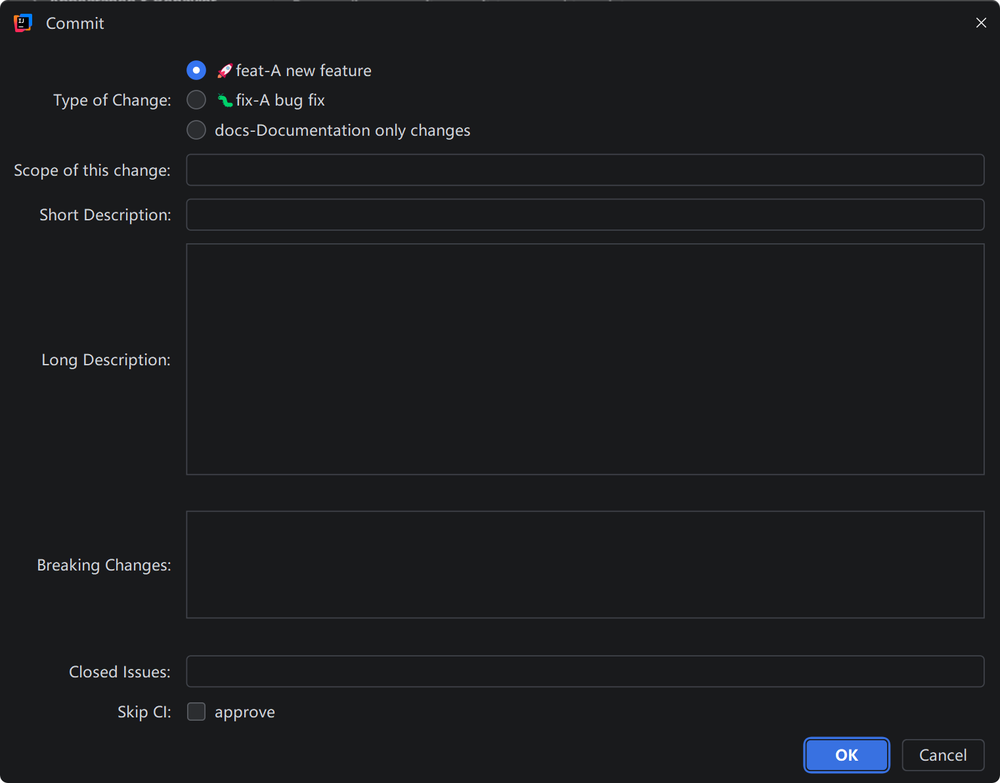

根据变更生成提交信息
选择 Git 变更后，插件可以调用配置好的 LLM 生成提交信息草稿，适合快速处理上下文较多的修改。

What it does
选择 Git 变更后，插件可以调用配置好的 LLM 生成提交信息草稿，适合快速处理上下文较多的修改。
已经写好的提交信息可以被重写为当前模板格式，减少风格不一致和字段缺失。
通过 type、scope、subject、body、BREAKING CHANGE、Closes、skip ci 等字段控制最终输出。
提交模板由 Apache Velocity 驱动，提交类型、字段显示、Skip CI 预设都可以按团队规范调整。
Daily workflow
在 IntelliJ 的 Commit 工具窗口里选择本次要提交的文件或 diff。
使用 Generate、Format、Create 三个动作完成不同程度的自动化。
插件把结构化字段渲染为团队约定的最终 Git commit message。
Screenshots
下面按实际使用顺序汇总插件界面。图片不是单独卡片，放在说明文字中作为文章插图；点击任意图片可以放大查看细节。
在 VCS Commit Message 区域中，插件会提供生成、格式化和手动创建三个入口。生成和格式化动作适合先拿到可用草稿，再由结构化编辑器进行人工确认。
通用设置用于控制提交类型展示方式、隐藏字段、Skip CI 默认值，以及三个提交动作是否显示在提交面板中。
提交模板由 Apache Velocity 渲染，提交类型列表可以按团队规范维护。模板决定最终文本结构，类型列表决定编辑器中可以选择的语义分类。
LLM 设置页集中配置 Provider、Base URL、API Key、模型、温度、返回语言和 Smart Echo。配置完成后，生成、格式化和回填结构化字段都会使用这里的参数。
Guide
在 IDE 中打开 File → Settings → Plugins → Marketplace，搜索并安装 Git Commit Message Helper。
进入 File → Settings → GitCommitMessageHelper，配置提交类型、模板、字段显示和 LLM。
选择变更后点击 Generate Commit Message、Format Commit Message 或 Create Commit Message，确认结果后提交。
LLM compatibility
这是“OpenAI 兼容模式”，适用于实现了 Chat Completions 协议的服务，不只限于 OpenAI 官方。Base URL 有两种写法：
https://api.openai.com/v1 这类服务根路径，插件会自动补上 /chat/completions。https://example.com/v1/chat/completions，插件会直接使用这个地址。Authorization: Bearer <API Key>，请求体包含 model、temperature、stream、messages。这是 Anthropic 原生 Messages API 模式，适用于 Claude 官方接口。它不是 OpenAI 兼容转接，协议字段和 Header 都不同。
https://api.anthropic.com，插件会自动请求 /v1/messages。x-api-key 和 anthropic-version: 2023-06-01。model、system、messages、temperature、max_tokens、stream。Smart Echo 不是生成新提交信息，而是把当前 commit message 文本解析回结构化字段。打开手动编辑器时，如果提交面板里已有内容，它会尝试识别 type、scope、subject、body、changes、closes 和 skipCi，方便在原草稿基础上继续调整。
Ready